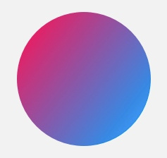
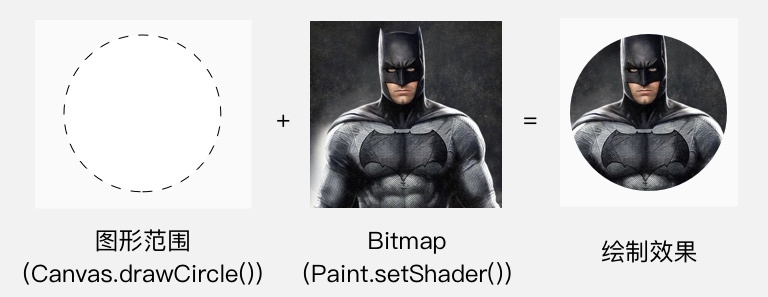
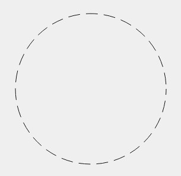

View的动画及Draw实现
动画
视图动画/补间动画/View Animation
视图动画，也叫Tween（补间）动画可以在一个视图容器内执行一系列简单变换。
视图动画分为四种，分别是位置、大小、旋转、透明度，同时还有一个对这些变换组合的动画集合。基类是public abstract class Animation,实现类分别是 TranslateAnimaton,ScaleAnimation,RotateAnimation,AlphaAnimation和AnimationSet
视图动画可以通过java和xml两种方式设置，一般更倾向于用xml形式：
| java类名 | xml关键字 | 描述信息 |
|---|---|---|
| AlphaAnimation | <alpha> 放置在res/anim/目录下 |
渐变透明度动画效果 |
| RotateAnimation | <rotate> 放置在res/anim/目录下 |
画面转移旋转动画效果 |
| ScaleAnimation | <scale> 放置在res/anim/目录下 |
渐变尺寸伸缩动画效果 |
| TranslateAnimation | <translate> 放置在res/anim/目录下 |
画面转换位置移动动画效果 |
| AnimationSet | <set> 放置在res/anim/目录下 |
一个持有其它动画元素alpha、scale、translate、rotate或者其它set元素的容器 |
属性
Animation
animation属性是下面四种变换都有的属性
android:detachWallpaper：是否在壁纸上运行
android:duration：动画持续时间，毫秒为单位
android:fillAfter：控件动画结束时是否保持动画最后的状态
android:fillBefore：控件动画结束时是否还原到开始动画前的状态
android:fillEnabled：与android:fillBefore效果相同
android:interpolator：设定插值器（指定的动画效果，譬如回弹等）
android:repeatCount：重复次数
android:repeatMode：重复类型有两个值，reverse表示倒序回放，restart表示从头播放
android:startOffset：调用start函数之后等待开始运行的时间，单位为毫秒
android:zAdjustment：表示被设置动画的内容运行时在Z轴上的位置（top/bottom/normal），默认为normal
Alpha属性详解
android:fromAlpha：动画开始的透明度（0.0到1.0，0.0是全透明，1.0是不透明）
android:toAlpha：动画结束的透明度，同上
Rotate属性详解
- android:fromDegrees：旋转开始角度，正代表顺时针度数，负代表逆时针度数
- android:toDegrees：旋转结束角度，正代表顺时针度数，负代表逆时针度数
- android:pivotX：缩放起点X坐标（数值、百分数、百分数p，譬如50表示以当前View左上角坐标加50px为初始点、50%表示以当前View的左上角加上当前View宽高的50%做为初始点、50%p表示以当前View的左上角加上父控件宽高的50%做为初始点）
- android:pivotY：缩放起点Y坐标，同上规律
Scale属性详解
android:fromXScale：初始X轴缩放比例，1.0表示无变化
android:toXScale：结束X轴缩放比例
android:fromYScale：初始Y轴缩放比例
android:toYScale：结束Y轴缩放比例
android:pivotX：缩放起点X轴坐标（数值、百分数、百分数p，譬如50表示以当前View左上角坐标加50px为初始点、50%表示以当前View的左上角加上当前View宽高的50%做为初始点、50%p表示以当前View的左上角加上父控件宽高的50%做为初始点）
android:pivotY：缩放起点Y轴坐标，同上规律
Translate属性详解
- android:fromXDelta：起始点X轴坐标（数值、百分数、百分数p，譬如50表示以当前View左上角坐标加50px为初始点、50%表示以当前View的左上角加上当前View宽高的50%做为初始点、50%p表示以当前View的左上角加上父控件宽高的50%做为初始点）
- android:fromYDelta：起始点Y轴从标，同上规律
- android:toXDelta：结束点X轴坐标，同上规律
- android:toYDelta：结束点Y轴坐标，同上规律
AnimationSet详解
AnimationSet继承自Animation，是上面四种的组合容器管理类，没有自己特有的属性，他的属性继承自Animation
举例
1 | <?xml version="1.0" encoding="utf-8"?> |
1 | <?xml version="1.0" encoding="utf-8"?> |
1 | ImageView spaceshipImage = (ImageView) findViewById(R.id.spaceshipImage); |
Animation其他api
| Animation类的方法 | 解释 |
|---|---|
| reset() | 重置Animation的初始化 |
| cancel() | 取消Animation动画 |
| start() | 开始Animation动画 |
| setAnimationListener(AnimationListener listener) | 给当前Animation设置动画监听 |
| hasStarted() | 判断当前Animation是否开始 |
| hasEnded() | 判断当前Animation是否结束 |
View中api
| View类的常用动画操作方法 | 解释 |
|---|---|
| startAnimation(Animation animation) | 对当前View开始设置的Animation动画 |
| clearAnimation() | 取消当View在执行的Animation动画 |
注意
补间动画执行之后并未改变View的真实布局属性值。切记这一点，譬如我们在Activity中有一个Button在屏幕上方，我们设置了平移动画移动到屏幕下方然后保持动画最后执行状态呆在屏幕下方，这时如果点击屏幕下方动画执行之后的Button是没有任何反应的，而点击原来屏幕上方没有Button的地方却响应的是点击Button的事件。
帧动画
实质是Drawable动画，关于Drawable,后期详细研究
属性动画/Property Animator
Android 3.0 以后引入了属性动画,通过控制对象的属性，来实现动画效果。官方定义：定义一个随着时间 （注：停个顿）更改任何对象属性的动画，无论其是否绘制到屏幕上。
一般我们使用属性动画都是animator而不是animation
具体先看下类关系：
1 | /** |
一般常用的实现类有四个
| java 类名 | xml 关键字 | 描述信息 |
|---|---|---|
| ValueAnimator | <animator> 放置在 res/animator/ 目录下 |
在一个特定的时间里执行一个动画 |
| TimeAnimator | 不支持 | 时序监听回调工具 |
| ObjectAnimator | <objectAnimator> 放置在 res/animator/ 目录下 |
一个对象的一个属性动画 |
| AnimatorSet | <set> 放置在 res/animator/ 目录下 |
动画集合 |
所以可以看见，我们平时使用属性动画的重点就在于 AnimatorSet、ObjectAnimator、TimeAnimator、ValueAnimator。 所以接下来我们就来依次说说如何使用。
ValueAnimator
顾名思义，ValueAnimator是一个在时间的维度上对设置的值做各种变化，在监听回调中实现动画
1 | public class ValueAnimator extends Animator implements AnimationHandler.AnimationFrameCallback { |
java代码
1 | btn.setOnClickListener(new View.OnClickListener() { |
ValueAnimator.ofInt(0,100):起始值和结束值，可以传多个，表示中间的值addUpdateListener：监听值的变化，一般在回调中进行view的变化设置addListener：状态的监听setInterpolator：设置监听器setDuration：设置持续时间setRepeatMode：设置重复模式setRepeatCount：设置重复次数，-1表示无限制其他of如下图
其他举例
1
2
3
4
5
6
7
8
9
10
11
12
13
14
15
16
17
18
19
20
21
22
23
24
25
26
27
28
29
30
31
32
33
34
35//3秒从0到100,再到50，再到100：
btn.setOnClickListener(new View.OnClickListener() {
public void onClick(View v) {
ValueAnimator valueAnimator = ValueAnimator.ofInt(0, 100,50,100);
valueAnimator.addUpdateListener(new ValueAnimator.AnimatorUpdateListener() {
public void onAnimationUpdate(ValueAnimator animation) {
Log.i(TAG, "onAnimationUpdate: " + animation.getAnimatedValue());
pg.setProgress((Integer) animation.getAnimatedValue());
}
});
valueAnimator.setDuration(3000);
valueAnimator.start();
}
});
//点击按钮，让背景颜色由白变红再变蓝：
btn.setOnClickListener(new View.OnClickListener() {
public void onClick(View v) {
ValueAnimator valueAnimator = ValueAnimator.ofArgb(0xffffffff,0xffff0000,0xff0000ff);
valueAnimator.addUpdateListener(new ValueAnimator.AnimatorUpdateListener() {
public void onAnimationUpdate(ValueAnimator animation) {
Log.i(TAG, "onAnimationUpdate: " + animation.getAnimatedValue());
btn.setBackgroundColor((Integer) animation.getAnimatedValue());
}
});
valueAnimator.setDuration(3000);
valueAnimator.start();
}
})
xml方式
| 属性 | 含义 |
|---|---|
| android:duration | 动画执行时间 |
| android:interpolator | 插值器 |
| android:repeatCount | 重复次数 |
| android:repeatMode | 重复模式，reverse：倒着重放动画。restart：正着重放动画 |
| android:startOffset | 延迟开始动画时间 |
| android:valueFrom | 值得开始值，int float color |
| android:valueTo | 值得目标值 int float color |
| android:valueType= | 值得类型 intType floatType |
ValueAnimator对应的XML标签是<animator>
在res目录下建立文件夹animator
在在res目录下建立文件夹animator中新建anim_test.xml文件:
1 | <animator xmlns:android="http://schemas.android.com/apk/res/android" |
- 在java代码中引用，上面的initAnim()方法改成这样：
1 | valueAnimator = (ValueAnimator) AnimatorInflater.loadAnimator(context,R.animator.anim_test); |
ObjectAnimator
1 | public final class ObjectAnimator extends ValueAnimator { |
通过继承关系可以知道，ValueObject的Api,ObjectAnimator都有
可以对对象的任意有set,get方法的属性进行值生成
java代码
1 | ObjectAnimator objectAnimator1 = ObjectAnimator.ofFloat(imageView, "translationX", 300); |
ofFloat：参数意义为 对象，属性名，多个变化值,同理，还有其他ofInt等和ValueAnimator类似的API
PropertyValuesHolder
针对同一个对象多个属性，同时作用多种动画
1 | PropertyValuesHolder propertyValuesHolder1 = PropertyValuesHolder.ofFloat("translationX", 300f); |
AnimatorSet
与PropertyValuesHolder类似，但AnimatorSet多了playTogether（同时执行）、playSequentially（顺序执行）、play(objectAnimator1).with(objectAnimator2)、before、after这些方法协同工作。
1 | ObjectAnimator objectAnimator1 = ObjectAnimator.ofFloat(imageView, "alpha", 1f, 0.5f); |
Keyframe
这个类是通过控制time/value键值对来实现动画效果的。Keyframe类里面实现的 ofInt，ofFloat，ofObject方法。来看看ofFloat(float fraction, float value)第一个参数表示动画完成度，值在0—1之间变化。第二个参数表示当前帧动画的值。还不明白那就来点简单粗暴的吧。动画向右平移200个像素之后又移动回原来位置的动画
1 | ObjectAnimator animator1 = ObjectAnimator.ofFloat(imageView, "translationX", 0.0f, 200.0f, 0f); |
我们利用Keyframe来实现如上动画效果
1 | Keyframe keyframe1 = Keyframe.ofFloat(0f, 0f);//第一帧动画 动画完成度0的时候的值是0 |
TypeEvaluator
在ObjectAnimator中可以用 ofInt() 来做整数的属性动画和用 ofFloat() 来做小数的属性动画。这两种属性类型是属性动画最常用的两种，不过在实际的开发中，可以做属性动画的类型还是有其他的一些类型。当需要对其他类型来做属性动画的时候，就需要用到 TypeEvaluator 了
TypeEvaluator 最经典的用法是使用 ArgbEvaluator 来做颜色渐变的动画。
1 | ObjectAnimator animator = ObjectAnimator.ofInt(view, "color", 0xffff0000, 0xff00ff00); |
另外，在 Android 5.0 （API 21） 加入了新的方法 ofArgb()，所以如果你的 minSdk 大于或者等于 21，你可以直接用下面这种方式
1 | ObjectAnimator animator = ObjectAnimator.ofArgb(view, "color", 0xffff0000, 0xff00ff00); |
自定义 Evaluator
如果你对 ArgbEvaluator 的效果不满意，或者你由于别的什么原因希望写一个自定义的 TypeEvaluator，你可以这样写：
1 | // 自定义 HslEvaluator |
xml方式
res下建立animator文件夹，然后建立res/animator/set_animator.xml
1 | <?xml version="1.0" encoding="utf-8"?> |
调用:
1 | Animator animator = AnimatorInflater.loadAnimator(getApplicationContext(), R.animator.set_animator); |
动画组合
set标签，有一个orderring属性设置为together，还有另一个值：sequentially（表示一个接一个执行）。
1 | <set xmlns:android="http://schemas.android.com/apk/res/android" |
View的animate方法
Android 3.0后，谷歌给View增加animate方法直接驱动属性动画。
1 | imageView.animate() |
自定义view举例
1 | public class SportsView extends View { |

Draw
在自定义view时，大概率会重写onDraw方法，这里面会涉及比较的API
Paint
意为画笔，是自定义view的关键类
Paint 的 API 大致可以分为 4 类：
- 颜色
- 效果
- drawText() 相关
- 初始化
颜色
Paint设置颜色的方法有两种：一种是直接用Paint.setColor/ARGB()来设置颜色，另一种是使用Shader来指定着色方案。
直接设置颜色
1 | paint.setColor(Color.parseColor("#009688")) |
setShader(Shader shader) 设置 Shader
在 Android 的绘制里使用 Shader ，并不直接用 Shader 这个类，而是用它的几个子类。具体来讲有 LinearGradient RadialGradient SweepGradient BitmapShader ComposeShader 这么几个：
设置两个点和两种颜色，以这两个点作为端点，使用两种颜色的渐变来绘制颜色。就像这样：
1 | Shader shader = new LinearGradient(100, 100, 500, 500, Color.parseColor("#E91E63"), |

设置了
Shader之后，绘制出了渐变颜色的圆。注意：在设置了
Shader的情况下，Paint.setColor/ARGB()所设置的颜色就不再起作用。
构造方法：
1 | LinearGradient(float x0, float y0, float x1, float y1, int color0, int color1, Shader.TileMode tile) |
参数：x0 y0 x1 y1：渐变的两个端点的位置color0 color1 是端点的颜色tile：端点范围之外的着色规则，类型是 TileMode。TileMode 一共有 3 个值可选： CLAMP, MIRROR 和 REPEAT
辐射渐变很好理解，就是从中心向周围辐射状的渐变。大概像这样：
1 | Shader shader = new RadialGradient(300, 300, 200, Color.parseColor("#E91E63"), |

构造方法：RadialGradient(float centerX, float centerY, float radius, int centerColor, int edgeColor, TileMode tileMode)。
参数：centerX centerY：辐射中心的坐标radius：辐射半径centerColor：辐射中心的颜色edgeColor：辐射边缘的颜色tileMode：辐射范围之外的着色模式。 CLAMP, MIRROR 和 REPEAT
1 | Shader shader = new SweepGradient(300, 300, Color.parseColor("#E91E63"), |

构造方法：SweepGradient(float cx, float cy, int color0, int color1)
参数：cx cy ：扫描的中心color0：扫描的起始颜色color1：扫描的终止颜色
用 Bitmap 来着色。其实也就是用 Bitmap 的像素来作为图形或文字的填充。大概像这样：
1 | Bitmap bitmap = BitmapFactory.decodeResource(getResources(), R.drawable.batman); |

构造方法：BitmapShader(Bitmap bitmap, Shader.TileMode tileX, Shader.TileMode tileY)
参数：bitmap：用来做模板的 Bitmap 对象tileX：横向的 TileModetileY：纵向的 TileMode。
所谓混合，就是把两个 Shader 一起使用。
1 | // 第一个 Shader：头像的 Bitmap |
注意：上面这段代码中我使用了两个
BitmapShader来作为ComposeShader()的参数，而ComposeShader()在硬件加速下是不支持两个相同类型的Shader的，所以这里也需要关闭硬件加速才能看到效果。

构造方法：ComposeShader(Shader shaderA, Shader shaderB, PorterDuff.Mode mode)
参数：shaderA, shaderB：两个相继使用的 Shadermode: 两个 Shader 的叠加模式，即 shaderA 和 shaderB 应该怎样共同绘制。它的类型是 PorterDuff.Mode 。
setColorFilter(ColorFilter colorFilter)
ColorFilter这个类，它的名字已经足够解释它的作用：为绘制设置颜色过滤。颜色过滤的意思，就是为绘制的内容设置一个统一的过滤策略，然后Canvas.drawXXX()方法会对每个像素都进行过滤后再绘制出来。举几个现实中比较常见的颜色过滤的例子：
在 Paint 里设置 ColorFilter ，使用的是 Paint.setColorFilter(ColorFilter filter) 方法。 ColorFilter 并不直接使用，而是使用它的子类。它共有三个子类：LightingColorFilter PorterDuffColorFilter 和 ColorMatrixColorFilter。
效果
setAntiAlias (boolean aa) 设置抗锯齿
setStyle(Paint.Style style)
1 | paint.setStyle(Paint.Style.FILL); // FILL 模式，填充 |
FILL 模式是默认模式，所以如果之前没有设置过其他的 Style，可以不用 setStyle(Paint.Style.FILL) 这句。
- setStrokeWidth(float width)
设置线条宽度。单位为像素，默认值是 0。
- setStrokeCap
设置线头的形状。线头形状有三种：BUTT 平头、ROUND 圆头、SQUARE 方头。默认为 BUTT。
- setStrokeJoin
设置拐角的形状。有三个值可以选择：MITER 尖角、 BEVEL 平角和 ROUND 圆角。默认为 MITER。
- setStrokeMiter
这个方法是对于 setStrokeJoin() 的一个补充，它用于设置 MITER 型拐角的延长线的最大值。
- setDither
1 | paint.setDither(true); |
设置图像的抖动。
- setFilterBitmap
设置是否使用双线性过滤来绘制 Bitmap 。
- setPathEffect
使用 PathEffect 来给图形的轮廓设置效果。对 Canvas 所有的图形绘制有效，也就是 drawLine() drawCircle() drawPath() 这些方法。大概像这样：
1 | PathEffect pathEffect = new DashPathEffect(new float[]{10, 5}, 10); |

具体说一下 Android 中的 6 种 PathEffect。PathEffect 分为两类，单一效果的 CornerPathEffect DiscretePathEffect DashPathEffect PathDashPathEffect ，和组合效果的 SumPathEffect ComposePathEffect。
- setShadowLayer
在之后的绘制内容下面加一层阴影。
1 | paint.setShadowLayer(10, 0, 0, Color.RED); |
方法的参数里， radius 是阴影的模糊范围； dx dy 是阴影的偏移量； shadowColor 是阴影的颜色。
如果要清除阴影层，使用 clearShadowLayer() 。
- 在硬件加速开启的情况下，
setShadowLayer()只支持文字的绘制，文字之外的绘制必须关闭硬件加速才能正常绘制阴影。- 如果
shadowColor是半透明的，阴影的透明度就使用shadowColor自己的透明度；而如果shadowColor是不透明的，阴影的透明度就使用paint的透明度。
drawText() 相关
- drawText(String text, float x, float y, Paint paint)
drawText()参数中的y，指的是文字的**基线（ baseline ）** 的位置
- drawTextOnPath
沿着一条 Path 来绘制文字。这是一个耍杂技的方法。
1 | canvas.drawPath(path, paint); // 把 Path 也绘制出来，理解起来更方便 |

初始化类
- reset()
重置 Paint 的所有属性为默认值。相当于重新 new 一个，不过性能当然高一些啦。
- set(Paint src)
把 src 的所有属性全部复制过来。相当于调用 src 所有的 get 方法，然后调用这个 Paint 的对应的 set 方法来设置它们。
- setFlags
批量设置 flags。相当于依次调用它们的 set 方法。例如：
1 | paint.setFlags(Paint.ANTI_ALIAS_FLAG | Paint.DITHER_FLAG); |
- setTextSize
设置文字大小。
- setTypeface
设置字体。
- setFakeBoldText
是否使用伪粗体。
- setStrikeThruText
是否加删除线。
- setUnderlineText
是否加下划线。
- setTextSkewX
设置文字横向错切角度。其实就是文字倾斜度。
- setTextScaleX
设置文字横向放缩。也就是文字变胖变瘦。
- setLetterSpacing
设置字符间距。默认值是 0。
- setTextAlign
设置文字的对齐方式。一共有三个值：LEFT CETNER 和 RIGHT。默认值为 LEFT。
- getFontSpacing
获取推荐的行距。即推荐的两行文字的 baseline 的距离。这个值是系统根据文字的字体和字号自动计算的。它的作用是当你要手动绘制多行文字（而不是使用 StaticLayout）的时候，可以在换行的时候给 y 坐标加上这个值来下移文字。
- getTextBounds
获取文字的显示范围。
参数里，text 是要测量的文字，start 和 end 分别是文字的起始和结束位置，bounds 是存储文字显示范围的对象，方法在测算完成之后会把结果写进 bounds
- measureText
测量文字的宽度并返回。
Canvas
范围裁切
- clipRect()
1 | canvas.save(); |
Canvas.save() 和 Canvas.restore() 来及时恢复绘制范围
- clipPath
其实和 clipRect() 用法完全一样，只是把参数换成了 Path ，所以能裁切的形状更多一些：
1 | canvas.save(); |

几何变换
几何变换的使用大概分为三类：
- 使用
Canvas来做常见的二维变换； - 使用
Matrix来做常见和不常见的二维变换； - 使用
Camera来做三维变换。
常见二维
Canvas.translate(float dx, float dy) 平移
Canvas.rotate(float degrees, float px, float py) 旋转
Canvas.scale(float sx, float sy, float px, float py) 放缩
skew(float sx, float sy) 错切
注意
Canvas的几何变换是坐标系的变换，可视区域没有改变。可以通过canvas.save和canvas.restore使得坐标系回到原点。
这两幅图可以看出，canvas.rotate(90)和canvas.rotate(-90)之后图形的样子。但是需要注意的是，不过经过什么变换，显示区域还是原来canvas的区域，所以这样变换在屏幕上将会什么都看不到。
经过canvas.translate(100,100)的变换后，整个canvas向x和y正方向移动了100的距离。
canvas.translate(-100,-100)就是向X和Y的负方向移动100，这样Rect就有一部分不在可视范围内了。
上左图是经过canvas.scale(0.5f,0.5f)之后得到的图形，可以看到canvas以及上面的Rect都的width和height都变为一半。
上有图是经过canvas.scale(2f,2f)之后得到的图形，可以看到canvas以及上面的Rect都的width和height都变为原来的一倍，还可以看到Rect已经有一部分超出可视范围，超出部分是看不到的。
使用 Matrix 来做变换
Matrix相关方法如下
setTranslate(floatdx,floatdy)：控制Matrix进行平移
setSkew(floatkx,floatky,floatpx,floatpy)：控制Matrix以px,py为轴心进行倾斜，kx,ky为X,Y方向上的倾斜距离
setRotate(floatdegress)：控制Matrix进行旋转，degress控制旋转的角度
setRorate(floatdegress,floatpx,floatpy)：设置以px,py为轴心进行旋转，degress控制旋转角度
setScale(floatsx,floatsy)：设置Matrix进行缩放，sx,sy控制X,Y方向上的缩放比例
setScale(floatsx,floatsy,floatpx,floatpy)：设置Matrix以px,py为轴心进行缩放，sx,sy控制X,Y方向上的缩放比例
API提供了set、post和pre三种操作，下面这个重点看下,之后效果会用到
post是后乘，当前的矩阵乘以参数给出的矩阵。可以连续多次使用post，来完成所需的整个变换。pre是前乘，参数给出的矩阵乘以当前的矩阵。所以操作是在当前矩阵的最前面发生的。
使用 Camera 来做三维变换
Camera坐标系与Android坐标系
camera的坐标系是左手坐标系。伸出左手，让拇指和食指成L形，大拇指向右，食指向上，中指指向前方，这样我们就建立了一个左手坐标系，拇指，食指，中指的指向分别代表了x，y，z轴的正方向。如下图所示：

下面是一些细节点：
1，camera位于坐标点（0,0），也就是视图的左上角；
2，camera.translate(10, 20, 30)的意思是把观察物体右移10，上移20，向前移30（即让物体远离camera，这样物体将会变小）；
3，camera.rotateX(45)的意思是绕x轴顺时针旋转45度。举例来说，如果物体中间线和x轴重合的话，绕x轴顺时针旋转45度就是指物体上半部分向里翻转，下半部分向外翻转；
4，camera.rotateY(45)的意思是绕y轴顺时针旋转45度。举例来说，如果物体中间线和y轴重合的话，绕y轴顺时针旋转45度就是指物体右半部分向里翻转，左半部分向外翻转；
5，camera.rotateZ(45)的意思是绕z轴顺时针旋转45度。举例来说，如果物体中间线和z轴重合的话，绕z轴顺时针旋转45度就是指物体上半部分向左翻转，下半部分向右翻转；
Android坐标系是二维的
1，camera位于坐标点（0,0），也就是视图的左上角；
2，垂直向下为y轴正方向
3、垂直向右为x轴正方向
- 相关api
Camera创建一个没有任何转换效果的新的Camera实例
- applyToCanvas(Canvas canvas) 根据当前的变换计算出相应的矩阵，然后应用到制定的画布上
- getLocationX() 获取Camera的x坐标
- getLocationY() 获取Camera的y坐标
- getLocationZ() 获取Camera的z坐标
- getMatrix(Matrixmatrix) 获取转换效果后的Matrix对象
- restore() 恢复保存的状态
- rotate(float x, float y, float z) 沿X、Y、Z坐标进行旋转
- rotateX(float deg)
- rotateY(float deg)
- rotateZ(float deg)
- save() 保存状态
- setLocation(float x, float y, float z)
- translate(float x, float y, float z)沿X、Y、Z轴进行平移